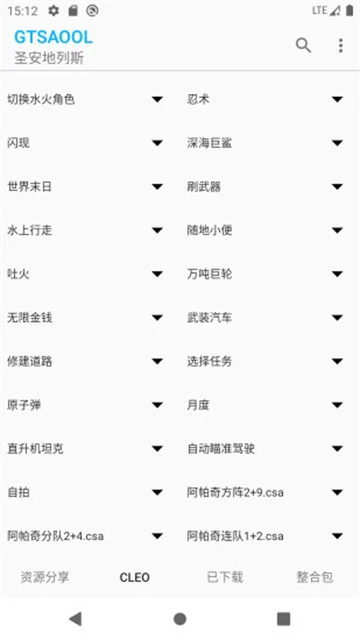

装了 GTSAOOL 半年，说说它让我对 GTA 安卓版改观了什么
从最初的新鲜感到半年后的平淡使用，GTSAOOL 不只是作弊器更是 GTA 安卓生态的入口——聊几个越用越顺手、越用越烦和离不开的功能。
半年前为什么装它
起因很简单：想在手机上重温一遍圣安地列斯。PC 版当年通关不下五遍，但安卓版装上去总觉得差点意思——画质没 PC 好，按键操作也别扭。搜了一圈发现有个叫 GTSAOOL官网 的东西，号称能在安卓上跑 CLEO 脚本、换车换人、装整合包，一口气把 GTA SA 的扩展性都补全了。抱着试试看的心态从 官方下载 拿了一份装上。
当时的预期就是个"安卓版作弊器"，清除通缉、刷枪刷车那种。装完才发现它远不止这个定位。
越用越顺手的几个点
第一个是那个手势——从屏幕中间向下划打开 CLEO 菜单。刚装上的时候老是划不对位置，不是没反应就是误触了游戏里的按键。练了大概三天就成条件反射了，现在不管在哪个 GTA 手游里，手指到屏幕中间就想往下划一下。这个设计比很多独立的 CLEO app 要聪明——它不占屏幕常驻按钮，玩的时候沉浸式，需要辅助时一个手势搞定。

模型替换的流程也是越用越顺。第一次替换车模的时候，dff 和 txd 文件分不清楚，GPU 格式检测也没跑，结果进游戏直接闪退。后来才知道安卓机型五花八门，高通、联发科、麒麟的 GPU 格式不通用，替换前必须先检测对格式。现在我已经能五分钟换好一辆车——找文件、检测 GPU、导入、选替换对象、重启游戏，一气呵成。换了辆法拉利把原版的 Banshee 替掉之后，在洛圣都的街道上开着那叫一个满足。
还有那个清除通缉的按钮。做任务被五六辆警车围着的时候，点一下就解脱了。说实话我不是那种全流程零通缉通关的硬核玩家，被追烦了就来一下。GTSAOOL 还支持设置通缉等级——想玩刺激就调到 5 星，FBI 都来了那种，想回归正常就关了脚本重启游戏。
越用越烦的几个点
电池优化是最大的怨念。安卓系统的后台清理机制和 GTSAOOL 天生不对付——系统一杀后台，CLEO 脚本瞬间失效，游戏里刚开的辅助功能全没了。GTSAOOL 每次启动都会弹提示让我关电池优化，但每个品牌手机的设置路径都不一样。小米是电池与性能里设无限制，华为在电池优化里选不允许，OPPO 要关应用冻结，vivo 还要额外开后台高耗电。我去年换了三台测试机，每台都要花十几分钟折腾这个。最烦的是系统更新后偶尔会重置这些设置，又得重新走一遍。
第二个烦的是模型兼容性。社区里能找到的车模人模确实多，但标注了"安卓通用"的十个里有三个装完闪退，两个贴图错位。GTSAOOL 内置了 GPU 检测，但检测只是第一步，实际运行时还可能出问题。有时候好不容易找到一辆喜欢的车模，导入完进游戏黑屏，又得从头找。
偶尔还会碰到脚本冲突。GTSAOOL 的脚本数量不少，有时候同时开了两个功能重叠的脚本——比如同时开两个清除通缉的，或者两个都改跑步速度的——游戏直接崩。好在属性类脚本大部分是独立改数值，冲突概率不算高，但踩过一次坑之后我就养成了"新增脚本后先进游戏测试五分钟再关"的习惯。
离不开的和再也没碰过的
清除通缉脚本是真离不开。哪怕后来练熟了躲警察的技巧，被围的时候还是条件反射想点一下。还有那个跑步速度拉满——CJ 在洛圣都的街道上跑得比跑车还快，用来赶路或逃跑都好用。
模型替换也留着，虽然不常折腾了，但偶尔想换个车换换口味还是能想起它。
重力修改、时间快进慢放、天气切换这些花里胡哨的功能，装完试了一次就再也没碰过。重力调零让车跳起来像飞一样，但玩起来没什么意思；时间快进跳过夜晚确实方便，但跳过之后任务里的 NPC 状态会乱；天气切换最多玩两分钟新鲜。这些功能在 GTSAOOL文档 里都有介绍，但实际用下来感觉是"有不如无"。
半年下来的观感修正
装之前我以为 GTSAOOL 就是个"高级作弊器"——功能多但都是花架子，用来爽半小时就腻了。现在发现它其实是GTA SA 安卓版的生态管理器。CLEO 脚本、MOD 整合包、模型替换、GPU 检测——它把这些原本散在各大论坛、需要手动拷贝文件改配置的东西，统一收进了一个五页界面里。不需要 root，不需要进文件管理器找路径，点几下按钮就能搞定。
我高估了它的稳定性。以为装完就不会崩，实际上脚本冲突和模型兼容性问题还是偶尔会出。但我低估了它的便利性——从手动改 .sav 文件到点一个开关，这个体验落差比我预期的大得多。
还有一件事是样本文档里没提到的：GTSAOOL 的五页界面设计（功能增强、模型替换、MOD 管理、CLEO 脚本、整合包）虽然第一次看会懵，但用一段时间就会发现分页逻辑很合理——功能页放常开的脚本，模型页放替换操作，整合包页放一键装机的东西，各管各的不打架。

去留结论
不会卸载。它占的存储空间不大，平时不用的时候就是个安静的后台进程，不会弹窗骚扰。半年来我大概两个月才拿出来玩一次 GTA，但每次玩还是会装着它。
什么信号出现就该换了？大概两个：一是 GTA SA 出了真正像样的安卓重制版——不用 GTSAOOL 也能原生支持 CLEO 和 MOD；二是手机配置实在跑不动了，安卓版圣安地列斯本身就卡。在那之前，它会一直留在我手机上那个"怀旧游戏"的文件夹里。
最后补一句：GTSAOOL 的文档写得挺用心的，安装前看一眼能少踩好多坑，各品牌电池优化的路径、GPU 格式检测的注意事项，都列得很清楚。这套资料在 GitHub、Gitee、GitCode 都有镜像，不管你习惯用哪个平台都方便。